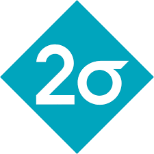
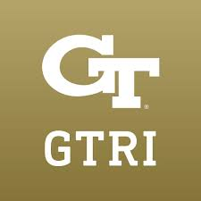

Mika Okamoto
I'm a B.S./M.S. student in Computer Science at the Georgia Institute of Technology, graduating in May 2027. I'm passionate about Explainable AI and Automated Reasoning, and I'm especially interested in how these areas can be applied to complex, real-world domains.
I currently work as a Research Assistant at the GTRI ARCAID Lab, where I explore hierarchical representation learning to improve reasoning systems. I also contribute to the GT Financial Services Innovation Lab, developing natural language processing and explainability techniques for financial market analysis. In addition, I collaborate with the Entertainment Intelligence & Human-Centered AI (EI & HCAI) Lab on projects related to explainable AI and machine unlearning.
Beyond research, I'm interested in software engineering, machine learning engineering, and data science. This summer (2025), I’ll be interning as a Software Engineer at Two Sigma Investments. I'm always happy to connect — feel free to reach out!
Recent News & Updates
- Summer 2025 – Excited to be joining Two Sigma Investments as a Software Engineering Intern!
- April 2025 – 🎉 BELLA (Budget-Efficient LLM Selection via Automated Skill Profiling) was accepted to MLSys YPS 2025! I’ll be presenting a poster at the symposium.
- May 2025 – 🎉 FLaME (Holistic Finance Language Model Evaluation) was accepted to ACL 2025!
- May 2025 – 🎉 Enhancing Military Family Readiness and Resilience Programs Through LLM-Generated Synthetic Data and Natural Language Interfaces was accepted to MHSRS 2025!
Experience Highlights
-
View details for Two Sigma Investments experience June 2025 - Aug 2025
Two Sigma Investments
Software Engineering Intern
Upcoming, Summer 2025.
View details for Georgia Tech Research Institute experience Jan 2024 - PresentGeorgia Tech Research Institute
Advisors: Clayton Kerce, Pat Langley
Automated reasoning through learning hierarchical representations.
-
View details for Raytheon Technologies experienceMay 2024 - Aug 2024
Raytheon Technologies
AI Algorithm Engineering Intern
Integrated explainable AI methods into data workflows.
View details for GT FinTech Lab (FSIL) experience Jan 2024 - Present
Jan 2024 - Present
GT FinTech Lab (FSIL)
Advisor: Sudheer Chava
Natural language processing and explainable AI for financial markets.
-
View details for UCSD Palmer Lab experience
 June 2023 - Sept 2023
View details for GT EI & HCAI Lab experience
Jan 2025 - Present
June 2023 - Sept 2023
View details for GT EI & HCAI Lab experience
Jan 2025 - Present
Research & Publications
Highlighted Research Projects

BELLA: Budget-Efficient LLM Selection via Automated Skill Profiling
BELLA addresses the challenge of selecting the most suitable Large Language Model (LLM) for a given task under real-world constraints (latency, budget). BELLA analyzes LLM outputs to identify interpretable skills and weaknesses, creating structured profiles to recommend models that offer the best utility within user defined resource constraints, bridging the gap between benchmark accuracy and deployment needs.
RATTACA: Genetic predictions in Heterogeneous Stock rats offer a new tool for genetic correlation and experimental design
RATTACA introduces a novel research paradigm using genetic predictions from Heterogenous Stock (HS) rats (via linear mixed models) to efficiently identify putative genetic correlations and facilitate a priori sampling of individuals with extreme trait values, offering a viable alternative to intensive experimental phenotyping.
Publications
*= denotes equal contribution
- FLaME (Holistic Finance Language Model Evaluation). Accepted to ACL Findings 2025.
- Enhancing Military Family Readiness and Resilience Programs Through LLM-Generated Synthetic Data and Natural Language Interfaces. Accepted to MHSRS 2025.
- BELLA: Budget-Efficient LLM Selection via Automated Skill Profiling. Poster presentation at MLSys Young Professionals Symposium (YPS) 2025. Preprint Poster PDF
- RATTACA: Genetic predictions in Heterogeneous Stock rats offer a new tool for genetic correlation and experimental design. Preprint Code
- Benchmarking LLM Performance on Financial Tasks with Optimized Prompting Strategies. Paper
- Genome-Wide Association Study of Age-Related Hearing Loss in CFW Mice Identifies Multiple Genes and Loci, Including Prkag2. Journal of the Association for Research in Otolaryngology. Paper
Projects & Work Experiences
Work Experience
Research Lab Experiences
Contact
I'm always interested in connecting with others in the field. Please feel free to reach out if you think our interests align!
Email: mikahokamoto@gmail.com
LinkedIn: linkedin.com/in/mokamoto